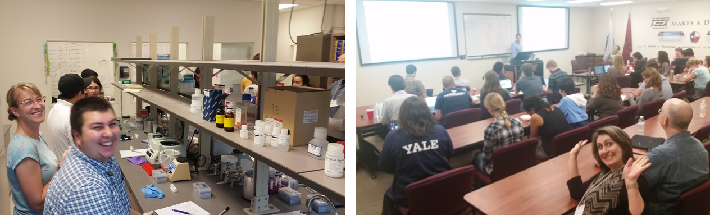
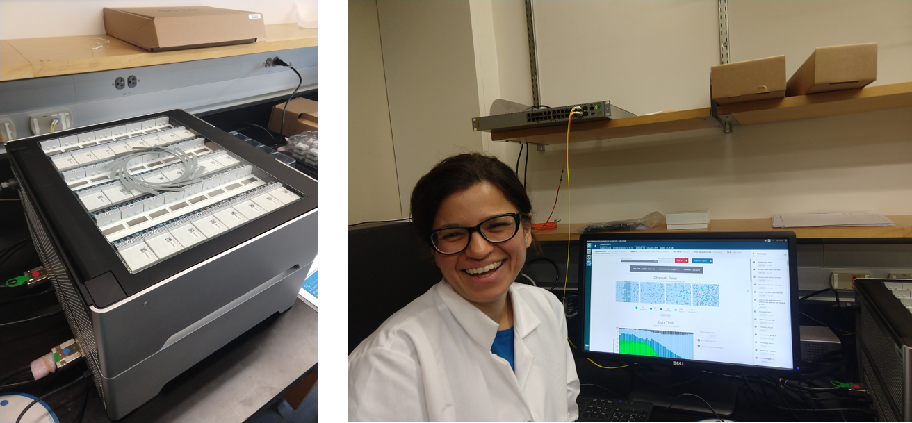
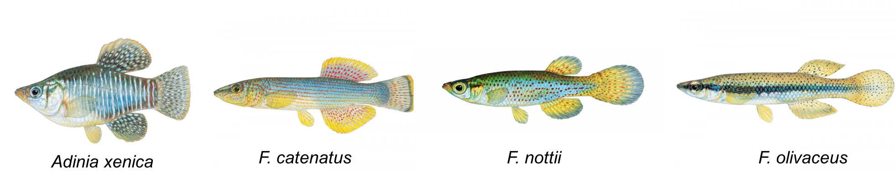
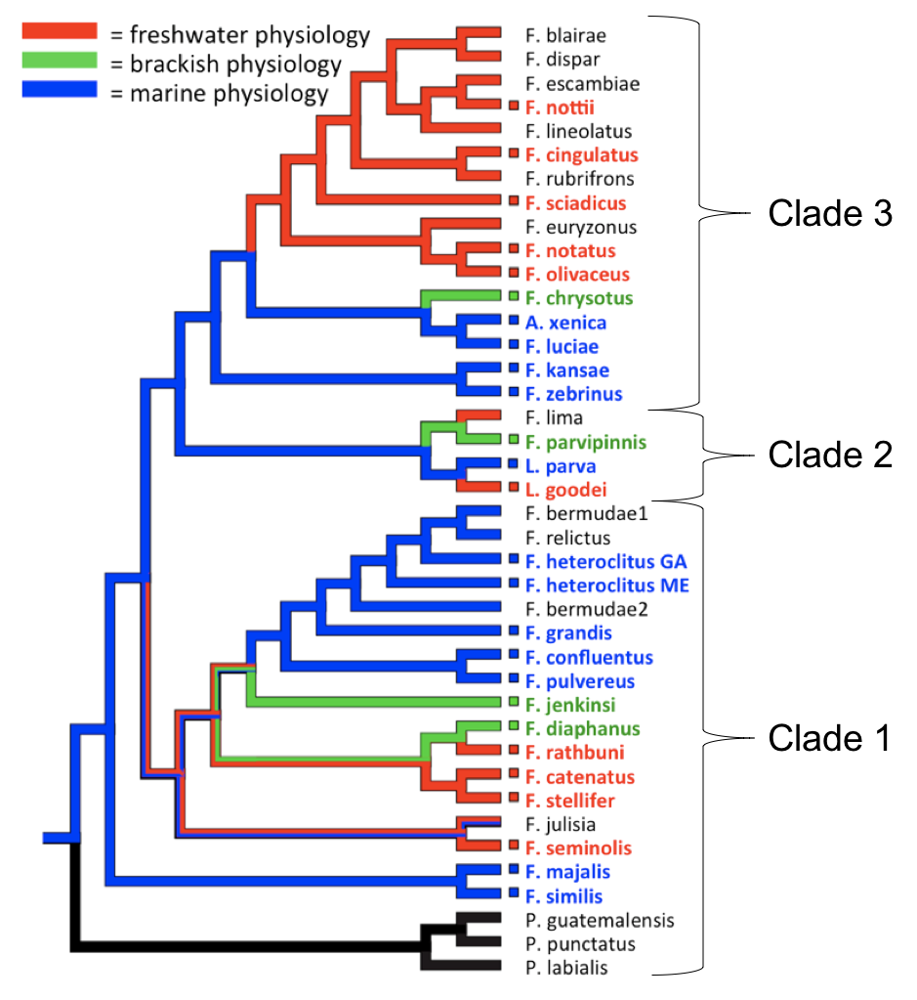
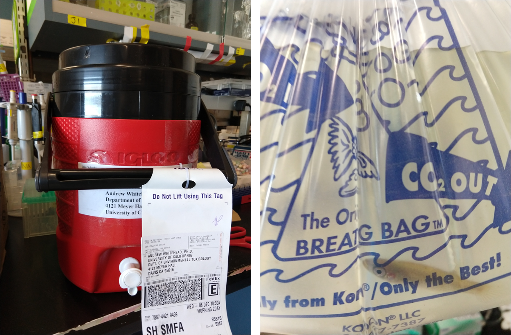
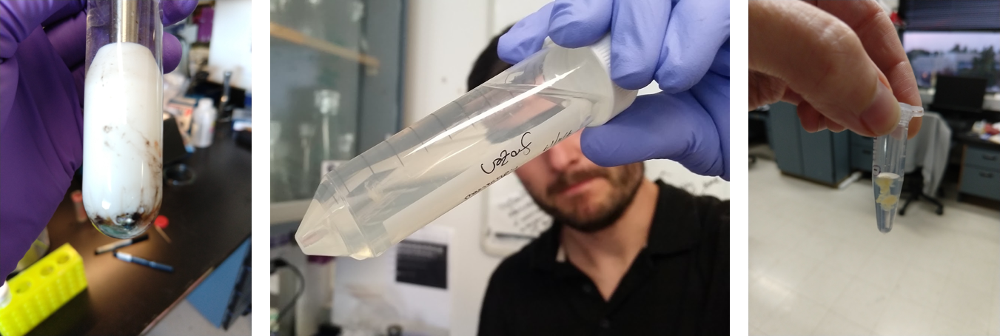
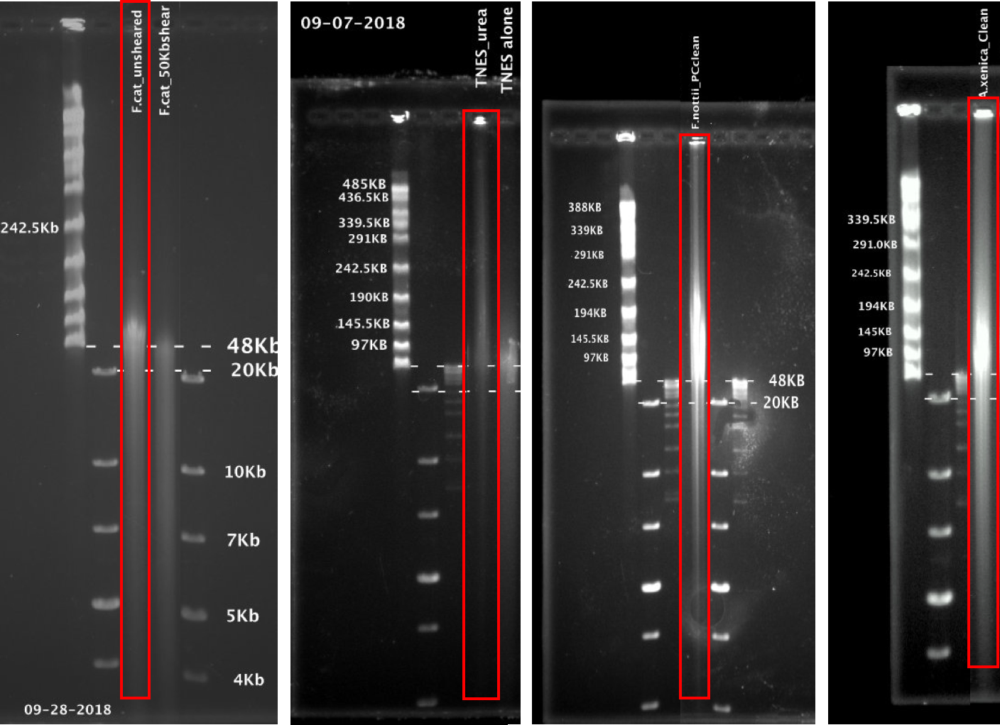

We have new long-read ONT PromethION genomic DNA sequencing data from 4 species of killifish! While we're working with it and generating ~40x coverage of new Illumina PE150 data for each species, we wanted to share this information and data. Since there are not many PromethION instruments out there, to my knowledge, these data are probably some of the first of its kind to be shared, besides human data.
Update (06/27/2019)
Killifish genome sequence ONT fastq and signal files and Illumina fastq can all be found in the ENA: PRJEB29136
Questions for the community
The purpose of this blog post is mainly to share our plan, seek advice, and see if anyone is interested in these data.
We are planning to post these data publicly in the hopes that they can serve methods and workflow developers! How can we make these data most useful to the bioinformatics community? Contact me: twitter or email
We're generating these ONT data for the purpose of assembling four reference genomes for Fundulus killifish species for whom we have a genome from a close (5-20 million years diverged) relative, Fundulus heteroclitus. We're in the process of generating 40x coverage of Illumina data for each species to improve the consensus assemblies.
By today's standards of genome assembly, this project is not the most sophisticated. We're not planning to do anything fancy to improve the scaffolding with optical and chromatin interaction mapping. Just quick and dirty genomes for around $3500 each. This is also by no means a perfect data set by ONT standards. Our DNA samples - from all species - have consistently not been utilizing the pores as efficiently as possible on either MinION or PromethION flowcells, despite using fresh tissue and troubleshooting efforts with different DNA extraction and cleanup methods. Therefore, our yields from ONT sequencing have not been as high as other groups have gotten. But, from our experience, this is what can happen when new species are sequenced with a new technology.
Despite these shortcomings, 20-30 Gb/species ONT data are great to have! Better than Illumina data alone. Since this is a new type of ONT data from the PromethION, we're in unchartered territory here about some things, so have questions:
- What does one do with the millions of raw fast5 signal files from the PromethION? Our basecalled fastq are 70-100 GB, but the directory of raw fast5 signal files is >600 GB for each run! Wow. To our knowledge, the only software that uses these files to polish the reads is Nanopolish by Jared Simpson's group. Since the files are so large, I haven't tried using Nanopolish yet. It it a good idea to try? What is the best way to share >600 GB of millions of fast5 files with people who might be interested in using it?
- Data are unfiltered. Should we remove DNA CS lambda phage spike-in before sharing in a public repository?
- What is the best way to look for reads suspected as errors (>900 Mb)? Should these be removed before sharing in a public repository?
- Where is the best place to share these sequencing data? Even though zenodo has recently upgraded their file size limits to 50 GB, it is not a good place to store these data based on their response to my request:
Dear Lisa, We're terribly sorry for the delay in response. Upload quota increase requests for bigger datasets have to be passed up the hierarchy, which usually takes time.
I'm sorry to inform you that we, unfortunately, will not be able to host the dataset as it surpasses our max allowed quota increase too much. By default, we provide a one-time quota increase up to 100GB for a dataset that will be cited from a peer-reviewed article.
Any other advice, questions, or comments on things that perhaps we are not considering?
Our plan from here:
1. Post data to a public nucleic acid repository
European Nucleotide Archive (ENA)-EBI or SRA-NCBI? (I will post the links to records here once they are available.)
What to do with the raw fast5 signal files?
2. Write a data note
Either F1000 research or GigaScience
3. Use the genome assemblies!
The ultimate goal is to do some comparative genomics analyses between these genomes, use them as references for RNAseq data, and scan for regulatory regions of interest, e.g. salinity-responsive enhancing elements (OSRE).
Thank you!
This is a collaborative effort between my two advisors, Dr. C. Titus Brown and Dr. Andrew Whitehead. (Seriously, I can't believe how fortunate I am to have two such supportive advisors and a willingly collaborative network of lab members and colleagues.) Other contributors to this project have been Dr. Ruta Sahasrabudhe, Dr. Lutz Froenicke, Tony Gill, Jen Roach, and committee member Dr. Megan Dennis. Special thanks to instructors at PoreCamp, Texas, Dr. Charlie Johnson and Dr. Richard Metz at Texas A&M Agrilife Research Sequencing Facility (where PoreCamp was held) for Illumina NovaSeq data from Fundulus olivaceus). THANK YOU to Dr. David Duvernell at Missouri University of Science & Technology and Dr. Jake Schaefer at the University of Southern Mississippi for sending us all of these fish to us, live!
All of this is made possible by funding support from the Moore Foundation Data-Driven-Discovery investigator award to Dr. C. Titus Brown.
Pics from Porecamp at Texas A&M, June 2017:

Below is a bit of background on the project, methods, preliminary results, references, and a list of some tools I've compiled.
New PromethION instrument at the UC Davis Genome Center
In May 2018, the UC Davis Genome Center received its PromethION from Oxford Nanopore Technologies (ONT)! This was part of a collaborative effort to acquire the instrument through the PromethION early release program (PEAP) back in early 2016 by Genome Center faculty: Dr. Richard Michelmore, Dr. John McPherson, Dr. Megan Dennis (who is on my dissertation committee!), Dr. Luis Carvajal-Carmona, and Dr. C. Titus Brown.

Around 2016, I started working with the ONT MinION to see if it is feasible to use for genome assemblies. First, with bacteria then scaling up to see if it would work for eukaryotic organisms. It turns out that the MinION does not scale up very well for us, at least for these killifish. To achieve 30-50x coverage for a genome assembly of a 1-1.1 Gb killifish genome, we would need to use 30-50 MinION flowcells. At a cost of $800-900/flowcell, that is not a reasonably affordable genome ($24,000-45,000). Whereas it took 39 flowcells to get ~30x (90Gb) coverage of the human genome, five PromethION flowcells sequenced ~80x coverage of the human genome. PromethION promises higher yield than MinION, allowing it to be more feasible for larger genomes >1 Gb. The cost of one PromethION run for UC Davis folks is $2,880. As you see below, we have not achieved maximally high yields from the Promethtion, but we have at least achieved ~20-30x coverage of our killifish genomes.
The avalance of data commences!
Four species of Fundulus killifish

These four species of killifish have never been sequenced before. We have a genome for the classic lab and field model species, Fundulus heteroclitus for understanding how organisms and populations interact with the external environment. But we do not have any genomic information from other important related freshwater species of Fundulus.
Why killifish?
The Fundulus heteroclitus killifish has been well-studied because of its physiological resilience to environmental change, including temperature and salinity. It has also been found to have rapidly evolved in polluted environments. While F. heteroclitus and most marine Fundulus species are capable of osmoregulating across a wide range of salinities, freshwater Fundulus species have lost much of their osmoregulatory flexibility at higher salinities compared to their marine ancestors.

The physiological requirement for high (or low) concentrations of salt ions in the water has affected geographic distributions of aquatic animals throughout evolutionary history and will continue to impact species worldwide in view of future changes in climate. To study the history of adaptation to different salinities and understand the mechanisms of evolution at the molecular level, we have been studying this group of related killifish from the genus Fundulus, which contains species that are natively adapted to different salinities. Some Fundulus species can tolerate a range of salinities (euryhaline) by switching osmoregulatory mechanisms while others require a more narrow salinity range (stenohaline) in either fresh or marine waters. Unique to this family of killifish is evidence that some species from the genus Fundulus have radiated into fresh water bodies on three separate, parallel occasions between 5-25 million years ago, and have lost their ability to tolerate higher salinities like their euryhaline relatives. We use Fundulus as a comparative model system for studying the physiological and genetic mechanisms that diverge between euryhaline and stenohaline freshwater species.
Four Fundulus killifish representing clades 1 and 3 were selected for genome sequencing to study the physiological and genetic mechanisms that diverge between euryhaline and stenohaline freshwater species. Other species of freshwater and brackish water killifish from Clade 2 (Lucania parva and Lucania goodei) are being sequenced by Dr. Becky Fuller's lab at U. Illinois Urbana-Champaign.
If you find these questions compelling and would consider collaborating, please contact us.
- Whitehead et al. 2010. Phylogeny of killifish osmotic tolerance.
- Whitehead et al. 2011. Genomic mechanisms of evolved physiological plasticity in killifish distributed along an environmental salinity gradient.
- Brennan et al. 2015. Reciprocal osmotic challenges reveal mechanisms of divergence in phenotypic plasticity in the killifish Fundulus heteroclitus.
- Brennan et al. 2018. Integrative Population and Physiological Genomics Reveals Mechanisms of Adaptation in Killifish.
DNA extractions
Live samples were shipped to UC Davis by Dr. David Duvernell and Dr. Jake Schaefer. When possible (all but Fundulus catenatus), samples were extracted from fresh tissue. Fish heads were used for high molecular weight (hmw) DNA extractions.

- Ultra-long read sequencing protocol by Josh Quick and Nick Loman works well, TLB + phenol:chloroform extraction
- Agilent #200600 DNA extraction kit found by Tony works well also, requires cleanup
- We have all found that fresh tissue is better than frozen tissue
- Pulse field gels (Thanks, Tony!) are necessary to visualize hmw DNA
- With Dr. Ruta, we tried the Qiagen - p. 39 "DNA purification from tissue using the Gentra puregene Tissue Kit" and found it was similar to the Agilent kit. Our DNA was still difficult to get into solution, which then required phenol:chloroform cleanup.
- DNA has always been difficult to get into solution (see pic of 0.5 mL tube on the far right below)
- Dr. Ruta found that adding urea to lysis buffer helped the final DNA pellet to be less brittle and go into solution easier Wasko et al. 2003
- In general, there is something weird with our samples. ONT has mentioned that this could a fish-specific sample issue, based on experiences with other customers. Has anyone else found this to be the case with fish hmw DNA being difficult to get into solution, then becoming brittle, breaking easily during cleanup?

These are Ruta's pulse field gels showing samples that were sequenced (in order from left to right: F. catenatus (sheared vs. unsheared), F. olivaceus, F. nottii, A. xenica). Fresh tissues were extracted from A. xenica, F. nottii. Frozen tissue from F. catenatus and F. olivaceus.

Sequencing
Here are the ONT sequencing data we have so far:
| Species | bases called | n reads | avg length | largest | reads N50 |
|---|---|---|---|---|---|
| Adinia xenica | 38,467,326,719 | 15,704,522 | 2,449 | 953,774 | 5,733, n = 1,373,426 |
| Fundulus nottii | 33,440,866,723 | 5,160,367 | 6,480 | 667,947 | 12,995, n=700,534 |
| Fundulus catenatus | 40,274,806,587 | 23,701,206 | 1,699 | 590,485 | 3,439, n = 2,687,295 |
| Fundulus olivaceus (MinION) | 4,962,626,713 | 740,248 | 6,704 | 973,552 | 12,726, n = 117,202 |
| Fundulus olivaceus (PromethION) | 50,093,027,850 | 10,902,817 | 4,595 | 779,368 | 11,670, n = 987,921 |
Overall project status:
| Species | native physiology | clade | ONT data | Illumina | miniasm assembly N50 | miniasm assembly size |
|---|---|---|---|---|---|---|
| Adinia xenica | Marine | 3 | 38 Gb | TBD | 369,038; n = 794 | 961,615,159 |
| Fundulus nottii | Freshwater | 3 | 33 Gb | TBD | 2,025,917 Mb; n = 151 | 1,141,443,860 |
| Fundulus catenatus | Freshwater | 1 | 40 Gb | TBD | 119,326; n = 2,612 | 975,193,007 |
| Fundulus olivaceus | Freshwater | 3 | 50 Gb (PromethION) | 180 Gb | 2,154,700, n = 158 | 1,284,878,256 |
Assemblies of Fundulus olivaceus data with ONT (MinION) and Illumina (NovaSeq) data:
| Seq data input | Tool | bases | n_contigs | average | largest | N50 | BUSCO (eukaryota) |
|---|---|---|---|---|---|---|---|
| ONT (MinION) | Canu | 9,804,264 | 540 | 18,156 | 365,191 | 40,681, n = 43 | 0.7% |
| ONT (MinION) | Miniasm | 4,917,546 | 153 | 32,140 | 233,136 | 50,056, n = 25 | 0.0 % |
| Illumina (NovaSeq) | Megahit | 1,183,861,293 | 1038799 | 1,139 | 88,218 | 3,846, n = 77,800 | 45.6 % |
| Illumina (NovaSeq) | ABySS | 1,381,148,284 | 1024759 | 1,347 | 140629 | 9833, n = 37,013 | 77.9% |
| Hybrid | Masurca | 1,134,160,060 | 90,237 | 12,568 | 386,222 | 42,823, n = 7,616 | 86.2% |
| Hybrid | SSPACE | TBD |
Preliminary data products
Rough assemblies and QC are available on osf.
pip install osfclient
export OSF_PASSWORD=password
export OSF_USERNAME=email.address
# list files in OSF
osf -p zjv86 ls
# copy files from OSF to local (or hpc - wherever you're working)
osf -p zjv86 clone Folivaceus_hybrid_genome_assembly
References
Jain M et al. 2017. A Fast Approximate Algorithm for Mapping Long Reads to Large Reference Databases.
Loose et al. 2016. Real time selective sequencing using nanopore technology.
The anticipated increasing speed of nanopore sequencing ('fast mode') and the scaling up of the MinION to 3,000 channels, and the PromethION with 144,000 channels, will challenge the implementation of 'Read Until' in real time and require algorithmic enhancements and computational power
Jain C et al. 2017. Nanopore sequencing and assembly of a human genome with ultra-long reads.
Nice slides by Benjamin Schwessinger explaining wet lab comparisons for hmw DNA prep.
Tan et al. 2018. Finding Nemo: hybrid assembly with Oxford Nanopore and Illumina reads greatly improves the clownfish (Amphiprion ocellaris) genome assembly.
Miller et al. 2018. GENOME REPORT: Highly Contiguous Genome Assemblies of 15 Drosophila Species Generated Using Nanopore Sequencing. Evidence that the consensus assembly can be dramatically improved by using the pilon/racon program with Illumina data.
Cao et al. 2016. Scaffolding and Completing Genome Assemblies in Real-time with Nanopore Sequencing
Tyler et al. 2018. Evaluation of Oxford Nanopore’s MinION Sequencing Device for Microbial Whole Genome Sequencing Applications
De Roeck et al. 2018. Accurate characterization of expanded tandem repeat length and sequence through whole genome long-read sequencing on PromethION.
List of available tools for ONT data:
Suggestions for additions to this list are welcome! (Especially if you have experience with them working well!)
QC & Evaluation:
- Porechop: removing adapters
- NanoPlot: quality report
- sourmash: identify contamination
- BUSCO: content evaluation
- Nanocomp: compare multiple ONT runs
- mashmap: for visualization (replaces nucmer)
Assemblers:
- canu, long reads: quick start, tutorial and paper
- masurca, hybrid assembly (on conda)
- SPAdes hybrid assembly (for bacteria)
- Alpaca, hybrid assembly and paper
- SSPACE-LongRead scaffolding (no instructions, but a paper!), here are my instructions for SSPACE-LongRead
- miniasm, uses minimap overlapper, no consensus step
Polishing and consensus improvement:
- Unicycler polish (paper)
- Nanopore polish, input ONT assembly with Illumina data
- Nanopolish
- Nanocorr: error correction (See presentation)
- racon
- pilon
- npScarf, paper
Here is the pipeline from Miller et al. 2018 15 Drosophila genomes paper.
Example rough workflow steps:
Install miniconda Python package manager:
wget https://repo.continuum.io/miniconda/Miniconda3-latest-Linux-x86_64.sh
bash Miniconda3-latest-Linux-x86_64.sh -b
echo export PATH="$HOME/miniconda3/bin:$PATH" >> ~/.bashrc
source ~/.bashrc
Create a conda environment for software installation:
conda create -n ONT python=3
source activate ONT
conda config --add channels defaults
conda config --add channels conda-forge
conda config --add channels bioconda
Install minimap2 (minimap2-2.12), miniasm and other tools:
conda install assembly-stats minimap2 miniasm bwa samtools busco pilon mashmap
Assemble:
# Overlap
minimap2 -x ava-ont -t8 A_xenica_combined.fastq | gzip -1 > A_xenica_reads.paf.gz
# Layout
miniasm -f A_xenica_combined.fastq A_xenica_reads.paf.gz > A_xenica_reads.gfa
awk '/^S/{print ">"$2"\n"$3}' A_xenica_reads.gfa | fold > A_xenica.fa
assembly-stats A_xenica.fa
Use pilon to improve consensus:
bwa index <genome.fasta>
bwa mem -t 4 genome.fasta R1.fq R2.fq | samtools view -Sb - | samtools sort - -o ecto_old_paired_qc.sorted.bam
samtools index ecto_old_paired_qc.sorted.bam
pilon --genome F_olivaceus.canu.ONT.unitigs.fasta --bam F_olivaceus_ONT_polished.sorted.bam --threads 8
BUSCO for evaluation:
run_BUSCO.py -i F_nottii_miniasm_ONT.fa -l ${BUSCO_LINEAGE}/eukaryota_odb9 -o F_nottii_miniasm --mode genome -c 8
Visualize 1:1 comparison with closely-related reference genome, run mashmap:
mashmap \
-r /mnt/home/ljcohen/reference/GCF_000826765.1_Fundulus_heteroclitus-3.0.2_genomic.fna \
-q ../../masurca_Folivaceus/CA.mr.41.15.15.0.02/final.genome.scf.fasta
Plot:
generateDotPlot png large mashmap.out
Edit the out.gp file, because of reasons.
vi out.gp
- Delete word 'tiny' in first line
- Comment out 3 lines with word 'mouse' in them. Then run:
gnuplot out.gp
which will then produce the png file.
Tony Gil demonstrating how to wash a hmw DNA pellet with 70% ethanol:
Comments
comments powered by Disqus